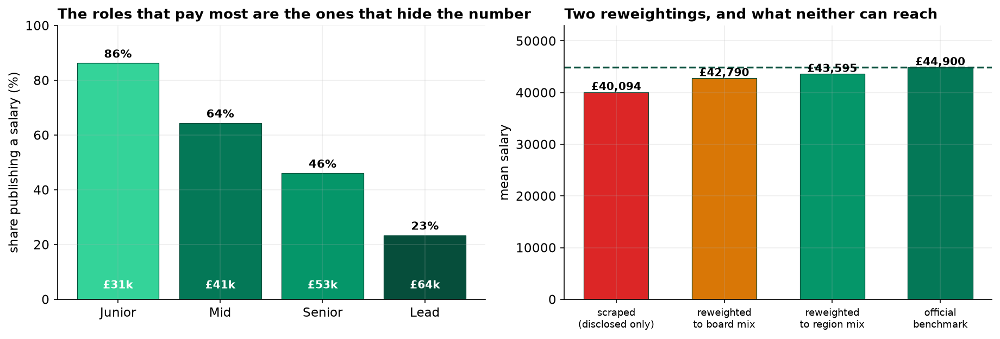
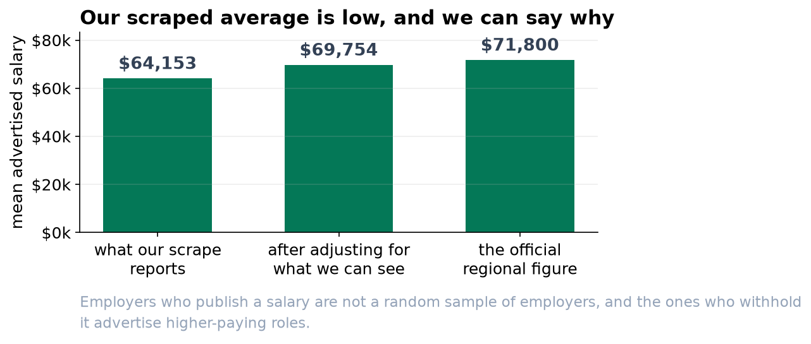
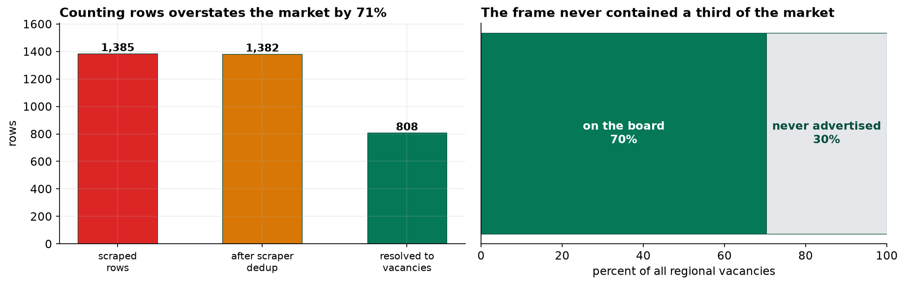

Our Scraped Salary Figure Is About Seven and a Half Thousand Dollars Low
The scrape worked. What it could reach, and what employers chose to publish, is where the number went wrong.
Recommendation
Do not publish the $64,153 average our scrape produces. The official regional figure is $71,800, and our number is low for two reasons we can name. After adjusting for what we can see it comes to about $69,754, still a little low. Quote the official figure and use our data for the things it is genuinely good at, such as which skills are being asked for and how many roles are remote.
Two things the raw file gets wrong
It counts adverts, not jobs. The same vacancy is often posted several times, sometimes by the employer and sometimes by an agency under its own name. Our 1,382 rows are really 808 distinct vacancies. Reporting the row count would overstate the market by 71%.
Employers who pay well do not print the number. 86 percent of junior roles publish a salary; only 23 percent of lead roles do, and lead roles pay roughly twice as much. So when we drop the adverts that say "Competitive", we are not losing a random slice, we are losing the top of the market.


A third of the market was never there to collect
The official employer census says only 70 percent of vacancies are ever advertised on a public board. Large employers use internal boards and headhunters, and senior roles are the least likely to be advertised at all. Both groups pay above average, so this pushes our figure the same way non-disclosure does.

What the data is good for
Not everything is compromised. The share of roles that are fully remote comes out at 0.0 percent against an official 37.2 percent, which is close enough to use. The difference is that remote status is printed on nearly every advert, so there is no filter deciding which ones tell us. Judge each field separately rather than trusting or distrusting the dataset as a whole.
What we cannot say
- The margin of error is misleading here. Because we captured everything the board showed, the usual statistical error is nearly zero: plus or minus about $1,380. That interval does not contain the official figure and never would, however many pages we collected. More scraping would make the wrong number more precise, not more correct.
- This describes advertised salary bands, not pay. A band is what an employer is willing to print, which is not the same as what the successful candidate is paid.
- It is a snapshot of one board in one quarter. Postings expire and are edited, so a scrape next month is a different frame and the comparison would confound real change with changes in what the board was showing.